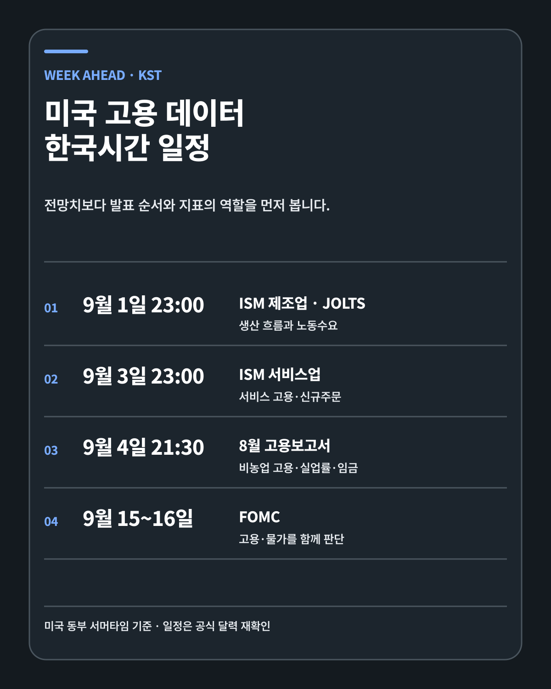
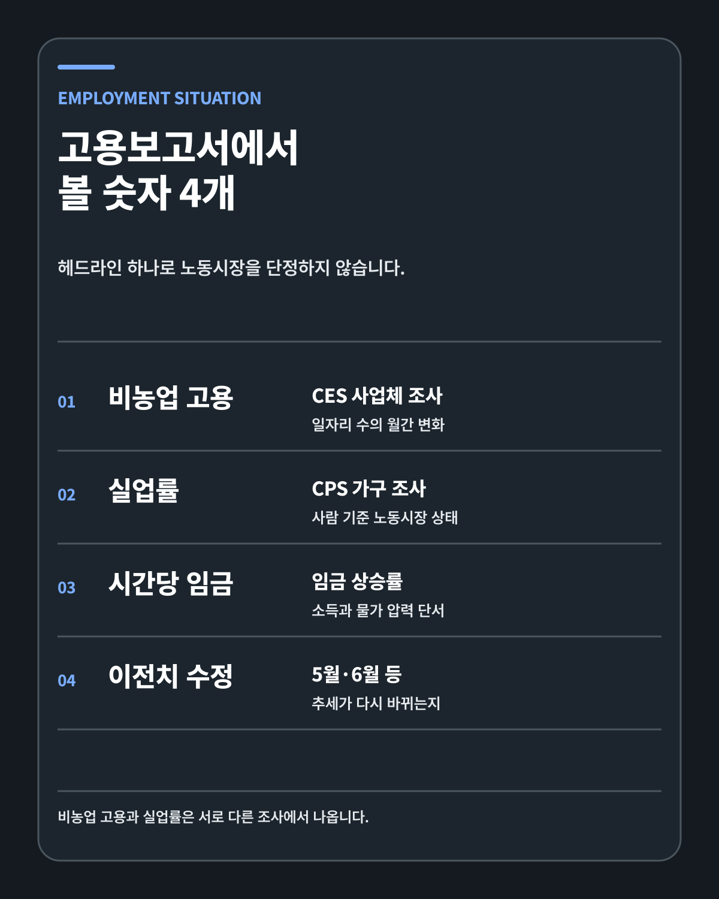
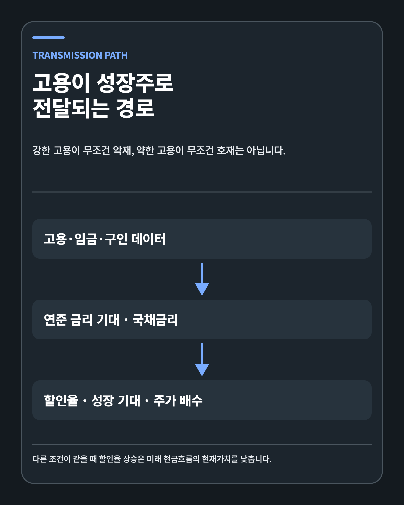
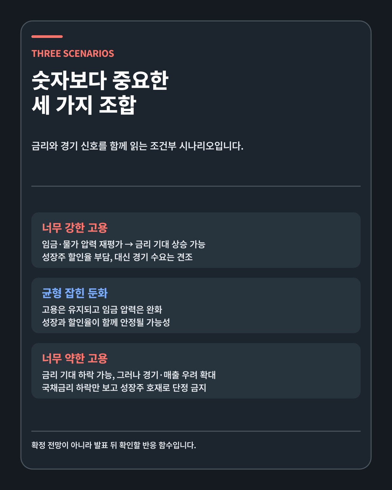

MACRO · DEEP RESEARCH
미국 고용 데이터 읽는 법: JOLTS·ISM·비농업 고용에서 성장주까지
고용이 강하면 성장주 악재, 약하면 호재라는 공식은 없습니다. 발표시간과 조사 구조부터 연준 기대·할인율·기업 매출까지 한 경로로 연결합니다.
FIVE-LINE ANSWER
미국 8월 고용보고서는 한국시간 2026년 9월 4일 밤 9시30분에 발표됩니다. 그보다 앞서 9월 1일 밤 11시에 JOLTS와 ISM 제조업, 9월 3일 밤 11시에 ISM 서비스업이 나옵니다. 비농업 고용은 사업체 조사 CES에서, 실업률은 가구 조사 CPS에서 나오므로 두 숫자는 같은 달에도 다른 방향을 보일 수 있습니다. 강한 고용은 금리와 할인율을 높일 수 있지만 경기와 기업 매출을 지지하는 힘도 되고, 약한 고용은 금리 기대를 낮추면서 경기 둔화 위험을 키울 수 있습니다. 성장주 투자자는 헤드라인을 맞히기보다 고용·임금·수정치·국채금리·기업 실적이 만드는 조합을 확인해야 합니다.
이번 주 발표 일정
미국 노동통계국 2026년 9월 공식 일정, ISM 발표 달력, NIST 서머타임 안내를 대조하면 한국시간 일정은 다음과 같습니다.
| 한국시간 | 미국 동부시간 | 발표 | 기준월 |
|---|---|---|---|
| 9월 1일 밤 11시 | 9월 1일 오전 10시 | ISM 제조업 PMI | 8월 |
| 9월 1일 밤 11시 | 9월 1일 오전 10시 | JOLTS | 7월 |
| 9월 3일 밤 11시 | 9월 3일 오전 10시 | ISM 서비스업 PMI | 8월 |
| 9월 4일 밤 9시30분 | 9월 4일 오전 8시30분 | 미국 고용보고서 | 8월 |
| 9월 15~16일 | 미국 현지 기준 | FOMC | 정책 결정 |
2026년 미국 서머타임은 3월 8일부터 11월 1일까지입니다. 동부 일광절약시간 EDT는 UTC-4이고 한국시간 KST는 UTC+9입니다. 13시간을 더하면 9월 1일 오전 10시는 같은 날 밤 11시, 9월 4일 오전 8시30분은 같은 날 밤 9시30분이 됩니다.
같은 주의 발표라도 기준월은 다릅니다. JOLTS는 7월 노동수요와 이직을 보여 주고, ISM과 고용보고서는 8월의 방향을 담습니다. 시점이 다른 숫자를 한 줄에 놓고 원인과 결과처럼 읽으면 안 됩니다.
시장 컨센서스도 경계가 필요합니다. 발표 전까지 기관별 예상이 바뀌고 집계 시각도 다릅니다. 이 글은 특정 전망치를 고정하지 않습니다. 실제 발표값과 이전치, 수정치, 조사 범위를 먼저 확인합니다.

고용보고서는 하나의 조사가 아닙니다
월간 Employment Situation은 노동시장을 한 화면에 보여 주지만 내부에는 서로 다른 두 조사가 있습니다. BLS 고용보고서 방법론 안내는 CES 사업체 조사와 CPS 가구 조사를 구분합니다.
CES는 기업과 정부 기관의 사업장을 표본으로 삼습니다. 급여 명부에 올라온 일자리 수, 산업별 고용, 평균 근로시간과 임금을 추정합니다. 우리가 비농업 고용 증가 또는 감소라고 부르는 헤드라인은 이 조사에서 나옵니다. 한 사람이 두 사업장에서 급여를 받으면 두 일자리로 집계될 수 있습니다.
CPS는 가구를 조사합니다. 사람을 기준으로 취업, 실업, 경제활동 참가 상태를 묻습니다. 실업률과 경제활동참가율은 이 조사에서 나옵니다. 자영업자, 무급 가족 종사자 등 CES와 포괄 범위가 다른 집단도 포함합니다.
두 조사의 차이는 오류가 아니라 설계입니다. 사업체 고용이 늘어도 노동시장에 들어온 사람이 더 많으면 실업률이 오를 수 있습니다. 비농업 고용이 약해도 사람들이 구직을 중단해 경제활동인구에서 빠지면 실업률은 유지되거나 내려갈 수 있습니다. 헤드라인 두 개를 서로의 검산표로만 쓰면 실제 노동시장 변화를 놓칩니다.
비농업 고용에서 볼 것
비농업 고용은 월간 일자리 수의 변화를 보여 줍니다. 농업 종사자와 일부 범주는 제외됩니다. 투자자는 증가·감소 숫자뿐 아니라 산업별 구성, 정부와 민간의 기여, 근로시간, 임금과 이전치 수정을 함께 봐야 합니다.
BLS 2026년 7월 고용보고서는 비농업 고용이 2만3000명 감소했고 실업률은 4.1%였다고 발표했습니다. 5월과 6월 고용은 합계 10만3000명 하향 수정됐습니다. 발표 당일의 7월 숫자보다 최근 석 달의 추세가 더 약해졌다는 의미가 생겼습니다.
수정치는 부가 정보가 아닙니다. 사업체 조사 응답이 추가로 들어오고 계절조정이 다시 계산되면서 이전 달 추정치가 바뀝니다. 첫 발표만 기록하면 실제 추세와 다른 이야기를 만들 수 있습니다. 9월 4일에는 8월 비농업 고용과 함께 6월·7월 수정치를 먼저 확인해야 합니다.
산업별 구성도 중요합니다. 특정 행사, 정부 교육, 임시 고용처럼 한두 부문의 변화가 헤드라인을 크게 만들 수 있습니다. 민간 서비스, 제조업, 건설과 정부 고용이 같은 방향인지 분리하면 경기 수요가 넓게 움직이는지 판단하기 쉽습니다.
실업률과 참가율을 함께 보는 이유
실업률은 실업자를 경제활동인구로 나눈 비율입니다. 일을 하지 않는 모든 사람이 실업자로 분류되는 것은 아닙니다. 적극적으로 일자리를 찾고 일할 수 있는 상태여야 실업자로 들어갑니다. 구직을 포기하거나 노동시장 밖에 있으면 비경제활동인구로 분류될 수 있습니다.
실업률이 유지돼도 경제활동참가율이 내려가면 노동시장 이탈이 있었는지 봐야 합니다. 반대로 참가율이 오르면서 실업률이 소폭 상승했다면 더 많은 사람이 일자리를 찾기 시작한 결과일 수 있습니다. 같은 0.1%포인트 변화라도 배경이 다릅니다.
가구 조사 취업자 수는 자영업을 포함해 사업체 조사보다 넓은 범위를 봅니다. 월간 변동성도 큽니다. 비농업 고용과 가구 취업자 수가 엇갈릴 때 한 달만 보고 결론 내리지 않고 여러 달 추세와 조사 범위를 확인합니다.
평균 시간당 임금은 물가와 소득을 동시에 가리킵니다
임금 상승은 근로자 소득과 소비 여력을 지지합니다. 성장주가 파는 소프트웨어, 클라우드, 광고, 전기차와 소비 서비스의 수요에도 긍정적인 경로가 생길 수 있습니다.
같은 임금 상승이 물가 압력으로 읽힐 수도 있습니다. 생산성보다 임금이 빠르게 오르고 기업이 비용을 가격에 전가하면 연준이 물가안정을 더 우선할 가능성이 커집니다. 임금 상승률 하나가 호재 또는 악재로 고정되지 않는 이유입니다.
평균값의 구성 효과도 봐야 합니다. 저임금 일자리가 많이 사라지면 남아 있는 근로자의 평균 임금이 올라갈 수 있습니다. 실제 개인의 임금이 모두 크게 오른 것과는 다른 현상입니다. 근로시간과 산업별 고용 변화를 함께 보는 편이 안전합니다.

JOLTS는 노동수요의 내부를 보여 줍니다
BLS JOLTS 정의에 따르면 구인 건수는 월말에 자리가 비어 있고, 30일 이내 일을 시작할 수 있으며, 외부 인력을 적극적으로 모집하는 자리입니다. 채용은 한 달 동안 급여 명부에 새로 들어온 사람을 뜻합니다. 퇴직은 근로자가 자발적으로 떠난 경우이고 해고와 방출은 고용주가 시작한 이직입니다.
구인 건수는 노동수요의 재고에 가깝습니다. 채용은 한 달 동안 일어난 흐름입니다. 구인이 높아도 채용이 낮으면 기업이 공고는 유지하지만 실제 채용을 서두르지 않거나 필요한 기술과 지원자가 맞지 않는 상태일 수 있습니다.
자발적 퇴직률은 근로자가 다른 일자리를 찾을 자신감과 연결될 수 있습니다. 그러나 퇴직이 낮다고 곧바로 침체라고 단정할 수는 없습니다. 해고도 낮은 상태에서 채용과 퇴직이 함께 낮으면 Richmond Fed가 설명한 저채용·저해고 균형에 가까울 수 있습니다.
JOLTS의 한계도 있습니다. 구인으로 잡히려면 30일 이내 시작할 수 있고 외부 채용 활동이 있어야 합니다. 장기 채용 계획이나 내부 이동은 같은 방식으로 포착되지 않습니다. JOLTS를 금요일 고용보고서의 예고편으로만 사용하지 않고 노동시장 안의 마찰과 회전율을 보는 자료로 사용합니다.
ISM PMI는 변화의 방향을 빠르게 보여 줍니다
ISM 제조업 PMI 방법론은 신규주문, 생산, 고용, 공급자배송과 재고의 5개 확산지수를 같은 가중치로 합성합니다. 50을 넘으면 제조업이 전반적으로 확장하고, 50 미만이면 수축하는 것으로 해석합니다.
PMI는 생산액이나 고용자 수를 직접 합산하지 않습니다. 이전 달보다 좋아졌는지, 같았는지, 나빠졌는지를 조사해 확산지수로 만듭니다. 50에서 멀어질수록 응답의 방향성이 강하지만 실제 경제 규모의 변화율과 동일하지 않습니다.
헤드라인만 보지 않고 신규주문과 고용을 함께 봅니다. 신규주문이 늘고 고용도 개선되면 기업이 생산 확대와 인력 수요를 같이 느끼는지 확인할 수 있습니다. 신규주문은 강한데 고용이 약하면 기업이 생산성, 자동화 또는 채용 지연으로 대응하는지 봅니다.
가격 지수와 공급자배송도 중요합니다. 고용이 강하고 가격 압력까지 올라가면 연준이 성장보다 물가를 더 걱정할 수 있습니다. 공급자배송 지수는 50을 넘을 때 배송이 느려졌다는 의미라 다른 구성항목과 방향 해석이 다릅니다.
서비스업 PMI는 서비스 활동과 고용의 방향을 제공합니다. 미국 고용의 큰 부분이 서비스업에 있으므로 제조업과 서비스업 고용이 같은 방향인지 확인합니다. 그래도 ISM 고용지수를 비농업 고용의 정확한 예측값으로 쓰지는 않습니다.
9월 FOMC와 연결하는 경계
연준 2026년 7월 29일 공식 성명은 연방기금금리 목표범위를 3.5~3.75%로 유지했습니다. 연준은 최대고용과 물가안정이라는 이중책무에 따라 노동시장과 물가를 함께 평가합니다.
연준 9월 일정에 따르면 다음 FOMC는 9월 15~16일입니다. 9월 4일 고용보고서는 회의 전에 확인하는 마지막 월간 Employment Situation입니다. 그러나 최종 결정에는 고용 외에도 CPI, PPI, 금융여건과 정책위원의 전망이 들어갑니다.
고용이 강하면 금리 인상, 고용이 약하면 금리 인하라는 공식은 없습니다. 고용이 강해도 임금과 물가가 완화되면 해석이 달라질 수 있습니다. 고용이 약해도 공급 충격으로 물가가 높다면 연준의 선택은 복잡해집니다.
정책을 맞히는 대신 반응 함수를 기록합니다. 고용·임금·물가가 어떤 조합으로 나오고, 연준 금리 기대와 2년·10년 국채금리가 어떻게 반응하는지 확인합니다. 시장 가격은 발표값과 전망치 차이뿐 아니라 수정치, 포지션과 다음 지표까지 반영합니다.

고용 데이터가 성장주에 전달되는 네 단계
첫 단계는 고용·임금·구인 데이터입니다. 두 번째는 연준 정책 기대와 국채금리입니다. 세 번째는 투자자가 적용하는 할인율과 위험 프리미엄입니다. 네 번째는 기업의 실제 매출·현금흐름과 주가 배수입니다.
OpenStax의 순현재가치 설명과 NYU Stern의 가치평가 자료가 보여 주듯, 다른 조건이 같다면 할인율이 높아질수록 미래 현금흐름의 현재가치는 낮아집니다. 먼 미래에 더 많은 현금흐름을 기대하는 기업은 할인율 변화에 민감할 수 있습니다.
이 관계를 금리와 주가의 기계적 역상관으로 바꾸면 안 됩니다. 고용이 강해 국채금리가 올라도 기업의 매출과 장기 현금흐름 전망이 더 크게 좋아지면 주가는 오를 수 있습니다. 반대로 금리가 내려도 경기침체 때문에 매출 전망이 악화되면 성장주는 하락할 수 있습니다.
엔비디아, 팔란티어, 브로드컴처럼 AI 투자와 장기 성장 기대가 큰 기업은 산업 수요와 할인율의 영향을 동시에 받습니다. 실적이 강한 기업도 시장 전체의 요구수익률이 높아지면 배수가 조정될 수 있고, 금리가 안정돼도 기업별 성장률이 낮아지면 주가는 약할 수 있습니다.
세 가지 시나리오
| 시나리오 | 고용·임금 | 금리 경로 | 성장주 해석 |
|---|---|---|---|
| 너무 강한 고용 | 채용·임금·구인이 함께 강함 | 높은 금리 유지·인상 기대 가능 | 할인율 부담과 경기 수요를 함께 평가 |
| 균형 잡힌 둔화 | 고용 유지, 임금·구인 과열 완화 | 금리 부담 완화 가능 | 매출과 배수에 가장 편한 조합인지 확인 |
| 너무 약한 고용 | 고용 감소·실업률·해고 상승 | 금리 기대 하락 가능 | 경기·매출 둔화가 할인율 호재를 압도하는지 확인 |
너무 강한 고용에서는 임금과 물가가 핵심입니다. 노동수요가 강해도 임금 압력이 완화되고 생산성이 높아진다면 연준의 반응은 단순하지 않습니다. 성장주는 할인율 부담과 매출 수요 중 어느 쪽이 더 크게 변했는지 봐야 합니다.
균형 잡힌 둔화는 고용이 무너지지 않으면서 임금·구인 과열이 낮아지는 조합입니다. 연준의 물가 부담과 기업의 경기 부담이 함께 완화될 수 있습니다. 다만 시장이 이미 이 조합을 가격에 반영했는지도 확인해야 합니다.
너무 약한 고용에서는 이전치 수정과 해고가 중요합니다. 한 달의 약한 비농업 고용보다 여러 달 하향 수정, 해고 증가와 참가율 하락이 동시에 나타나면 경기 수요를 다시 계산해야 합니다.

발표 뒤 확인할 체크리스트
- JOLTS의 구인과 채용이 같은 방향인지
- 자발적 퇴직과 해고가 노동자의 자신감과 기업 행동을 어떻게 보여 주는지
- ISM 신규주문·생산·고용·가격이 같은 신호를 보내는지
- 비농업 고용과 실업률이 엇갈리면 CES·CPS 차이로 설명되는지
- 임금과 근로시간이 소득과 물가 중 어느 경로를 강화하는지
- 이전치 수정이 최근 3개월 추세를 바꾸는지
- 2년·10년 국채금리와 성장주가 발표 뒤 어떻게 반응하는지
자주 하는 오해
첫 번째 오해는 비농업 고용과 실업률이 같은 조사라는 생각입니다. 두 지표의 방향이 다르면 조사 범위와 참가율을 먼저 확인합니다.
두 번째는 JOLTS 구인 건수가 높으면 금요일 고용도 반드시 높다는 해석입니다. JOLTS는 기준월이 한 달 느리고 구인과 실제 채용이 다릅니다.
세 번째는 PMI 50 미만을 곧바로 경기침체라고 부르는 것입니다. PMI는 제조업 또는 서비스업의 확산지수이며 GDP와 완벽하게 같은 지표가 아닙니다.
네 번째는 약한 고용이 성장주에 항상 좋다는 믿음입니다. 할인율이 내려가도 기업 매출과 현금흐름 전망이 더 크게 악화되면 주가에는 부정적일 수 있습니다.
다섯 번째는 발표 직후 첫 움직임을 최종 해석으로 보는 것입니다. 수정치와 세부 항목, 국채금리, 달러와 다음 물가 지표가 반영되면서 시장의 결론이 바뀔 수 있습니다.
제 판단
저는 이번 주 고용보고서를 금리 방향을 맞히는 이벤트로만 보지 않습니다. 노동시장이 기업 매출을 지탱할 정도로 유지되는지, 임금과 물가 압력이 연준의 높은 금리 유지 가능성을 키우는지, 성장주의 실제 현금흐름과 할인율 중 어느 쪽이 더 크게 변하는지 확인하겠습니다.
고용이 강해서 성장주가 하락하면 기업 펀더멘털이 변했는지와 할인율만 바뀌었는지를 나눠 봅니다. 고용이 약해서 성장주가 오르더라도 매출 가정이 훼손되지 않았는지 확인합니다. 가격 움직임을 먼저 보고 이야기를 만드는 대신 발표 전 반응 함수를 기록합니다.
이 글은 경제지표와 성장주 가치평가를 공부하기 위한 개인 투자 리서치입니다. 특정 금융상품이나 종목의 매수·매도를 권유하지 않습니다. 투자 판단과 손익의 책임은 투자자 본인에게 있습니다.
작성 방법
이 글은 2026년 8월 31일 기준 BLS·ISM·Federal Reserve·NIST 공식 달력과 방법론을 우선하고, 독립 일정 자료와 가치평가 교재를 교차검증했습니다. 시장 전망치는 집계 시점마다 달라질 수 있어 확정 사실로 사용하지 않았습니다.
개인 투자 기록이며 특정 금융상품이나 종목의 매수·매도를 권유하지 않습니다. 투자 판단과 손익의 책임은 투자자 본인에게 있습니다.